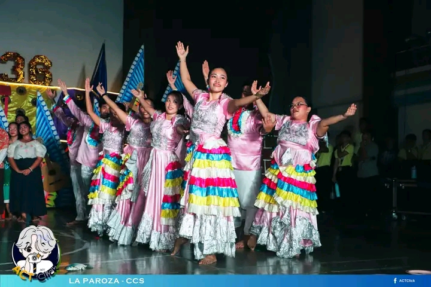
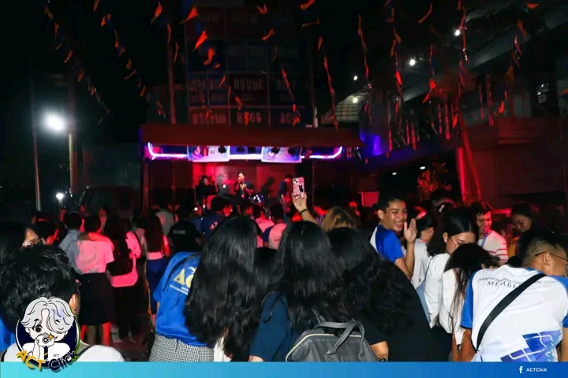
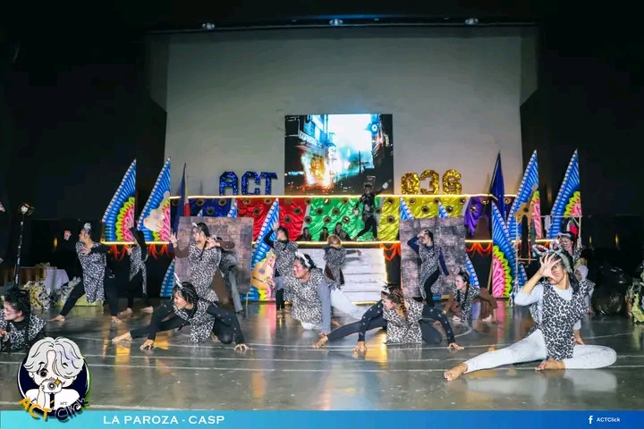
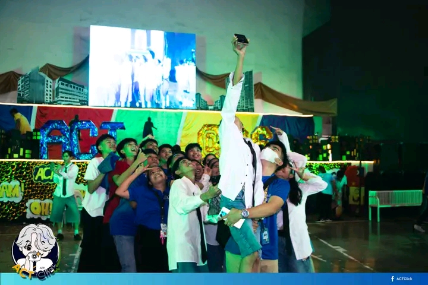
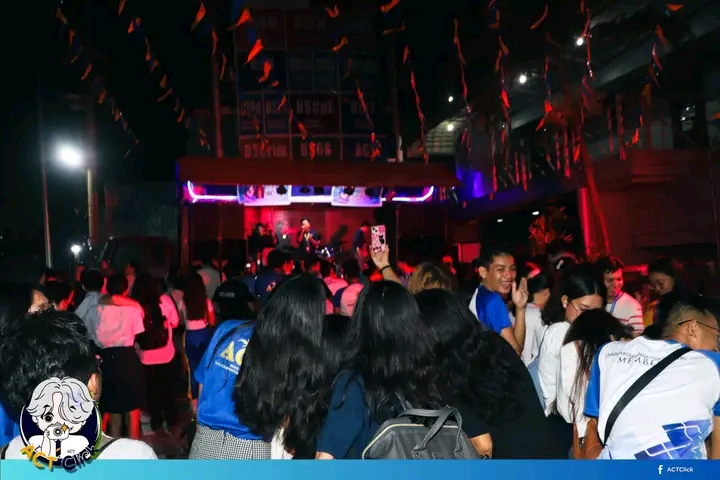
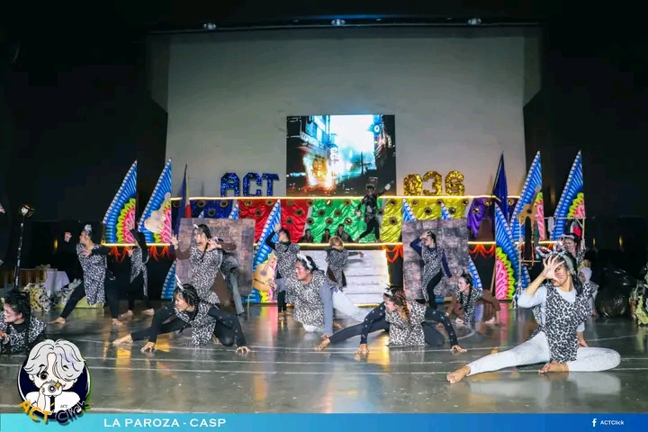
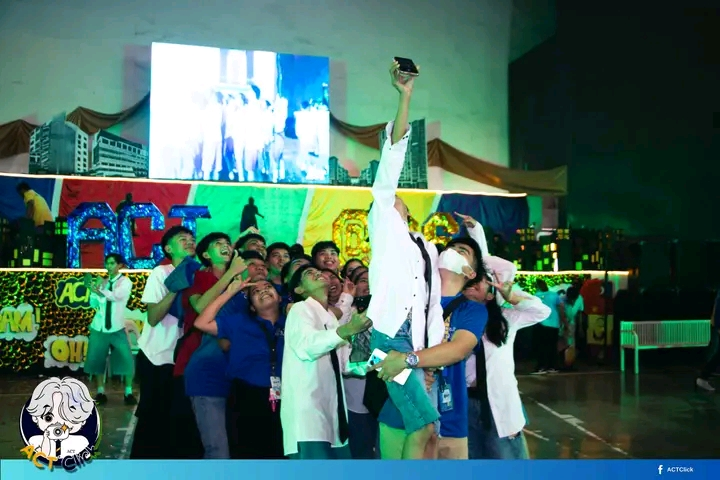
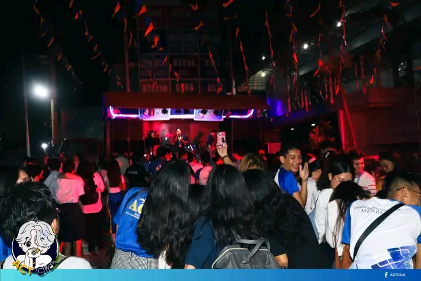
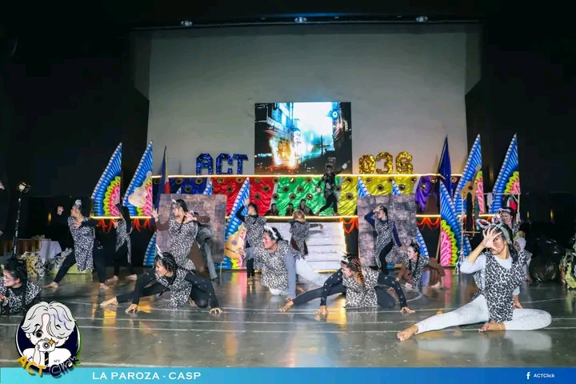
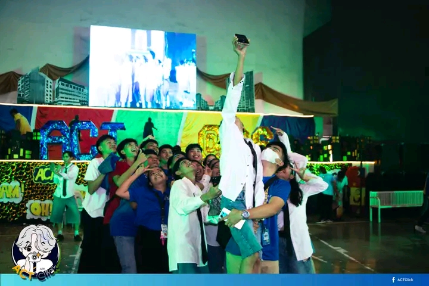

The inter-college debate was a lively and engaging event, showcasing the sharp minds and persuasive skills of our students.
"

 





The La Paroza Event showing there talent and support of CCS departments.
The Ms & Mrs ambassadress of the different departments.
The Rakrakan Event enjoying the beat of the music.
La Paroza different departments showing the support and showing there talents.
The Opening Event by ACT's students making more memories.



Photo Description
About Us
This website was created by Cheriebel Dacola from IT501P to document the memorable College Day. We hope you enjoy reliving the day through our photos and videos.